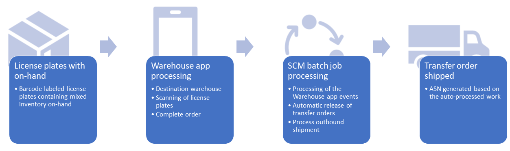

Umlagerungsaufträge aus der Lagerort-App erstellen
Important
Dynamics 365 for Finance and Operations hat sich zu speziell entwickelten Anwendungen entwickelt, mit denen Sie bestimmte Geschäftsfunktionen verwalten können. Weitere Informationen zu diesen Änderungen finden Sie im Dynamics 365-Lizenzierungshandbuch.
Diese Funktion ermöglicht Lagerarbeitern das Erstellen und Verarbeiten von Umlagerungsaufträgen direkt über die Lagerort-App. Die Lagerarbeiter wählen zunächst den Ziellagerort aus und können dann mit der App ein oder mehrere Kennzeichen scannen, um Kennzeichen zum Umlagerungsauftrag hinzuzufügen. Wenn der Lagerarbeiter Bestellung abschließen auswählt, erstellt ein Batchauftrag den erforderlichen Umlagerungsauftrag und die Bestellpositionen basierend auf dem verfügbaren, für diese Kennzeichen registrierten Lagerbestand.
Erstellung von Umlagerungsaufträgen aus der Lagerort-App aktivieren
Bevor Sie diese Funktion nutzen können, müssen Sie die Funktion und ihre Voraussetzugnen auf Ihrem System aktivieren. Administratoren können die Seite Funktionsverwaltung verwenden, um den Status der Funktion zu überprüfen und sie bei Bedarf zu aktivieren.
- Aktivieren Sie zuerst die Funktion Lagerort-App-Ereignisse verarbeiten, die in der Funktionsverwaltung aufgeführt ist als:
- Module ‑ Lagerortverwaltung
- Funktionsname - Lager-App-Ereignisse verarbeiten
- Aktivieren Sie dann die Funktion Umlagerungsaufträge aus der Lagerort-App erstellen, die wie folgt aufgeführt ist:
- Module ‑ Lagerortverwaltung
- Funktionsname: Erstellen und Verarbeiten von Umlagerungsaufträgen über die Lagerort-App
- Um die Verarbeitung der ausgehenden Lieferungen zu automatisieren, müssen Sie auch die Funktion Ausgehende Lieferungen aus Batchverarbeitungsaufträgen bestätigen aktivieren. Diese Funktion ist aufgeführt als:
- Module ‑ Lagerortverwaltung
- Funktionsname: Ausgehende Lieferungen aus Batchverarbeitungsaufträgen bestätigen
Auf einem mobilen Gerät eine Menüoption zur Erstellung von Umlagerungsaufträgen einrichten
Hier finden Sie allgemeine Richtlinien zum Einrichten eines Menüelements auf mobilen Geräten zum Erstellen eines Umlagerungsauftrags. Abhängig von Ihren geschäftlichen Anforderungen für den Automatisierungsgrad, der festgelegt werden soll, wenn Benutzer Umlagerungsaufträge aus der Fertigung erstellen, werden verschiedene Konfigurationen aktiviert. Das Szenario in diesem Dokument beschreibt eine solche Konfiguration.
Gehen Sie zu Lagerortverwaltung > Einstellungen > Mobiles Gerät > Menüoptionen für mobiles Gerät.
Wählen Sie Neu aus, um ein neues Menüelement zu erstellen. Nehmen Sie dann die folgenden Einstellungen vor, um loszulegen:
- Name des Menüelements: Weisen Sie einen Namen zu, wie er in Supply Chain Management angezeigt werden soll.
- Titel: Weisen Sie einen Menünamen zu, der den Mitarbeitern in der Lagerort-App angezeigt werden soll.
- Modus: Auf Indirekt festlegen (diese Lagerort-App erstellt keine Arbeit).
- Aktivitätscode: Auf Umlagerungsauftrag aus Kennzeichen erstellen festlegen, damit die Lagerarbeiter einen Umlagerungsauftrag basierend auf einem oder mehreren gescannten Kennzeichen erstellen können.
Verwenden Sie die Einstellung Richtlinie zum Erstellen von Umlagerungsauftragspositionen, um zu festzulegen, wie Umlagerungsauftragspositionen von diesem Menüpunkt erstellt werden. Die Positionen werden basierend auf dem vorhandenen Lagerbestand erstellt/aktualisiert, der für die gescannten Kennzeichen registriert ist. Wählen Sie einen der folgenden Werte aus:
- Keine Reservierung: Die Umlagerungsauftragspositionen werden nicht reserviert.
- Ladungsträgerbasiert mit Positionsreservierung: Die Umlagerungsauftragspositionen werden reserviert und verwenden die Strategieoption „Ladungsträgerbasiert“, bei der die entsprechenden Kennzeichen-IDs gespeichert werden, die den Auftragspositionen zugeordnet sind. Die Werte für „Lokalisierte Ladungsträger-ID“ können daher als Teil des Arbeitserstellungsprozesses für die Transportauftragspositionen verwendet werden.
Verwenden Sie die Einstellung Auslieferungsrichtlinie, um den Versandprozess für ausgehende Umlagerungsaufträge nach Bedarf weiter zu automatisieren. Wenn ein Mitarbeiter die Schaltfläche Bestellung abschließen auswählt, erstellt die App das Lager-App-Ereignis Bestellung abschließen, bei dem der hier im Feld Auslieferungsrichtlinie für jede Position ausgewählte Wert im aktuellen Umlagerungsauftrag angewendet wird. Wenn später die Ereigniswarteschlange von einem Batchauftrag verarbeitet wird, um den Umlagerungsauftrag zu erstellen, kann der in diesem Feld gespeicherte Wert vom Batchauftrag gelesen werden und somit steuern, wie dieser Auftrag jede Position verarbeitet. Wählen Sie eine der folgenden Optionen:
- Keine: Es erfolgt keine automatisierte Verarbeitung.
- Freigabe an Lager: Automatisiert die Freigabe für den Lagerprozess.
- Lieferungsbestätigung: Automatisiert die Lieferungsbestätigung.
- Freigabe und Lieferungsbestätigung: Automatisiert sowohl die Freigabe an das Lager als auch die Lieferungsbestätigung.
Hinzufügen der Menüoption des mobilen Geräts zu einem Menü
- Wechseln Sie zu Lagerortverwaltung > Einstellungen > Mobiles Gerät > Menü für mobiles Gerät
- Wählen Sie Bearbeiten aus.
- Wählen Sie ein vorhandenes Menü aus, nachdem Sie die neue Menüoption unter Verfügbare Menüs und Menüoptionen ausgewählt haben. Fügen Sie die Menüoption hinzu, indem Sie die Schaltfläche mit dem Pfeil nach rechts auswählen.
Erstellen eines Umlagerungsauftrags basierend auf Kennzeichen
Die Lagerort-App verfügt über einen einfachen Prozess zum Erstellen von Umlagerungsaufträgen basierend auf Kennzeichen. Hierzu geht die Arbeitskraft mithilfe der Lagerort-App folgendermaßen vor:
- Erstellen Sie den Umlagerungsauftrag und identifizieren Sie den Ziellagerort.
- Identifizieren Sie jedes zu versendende Kennzeichen.
- Wählen Sie Bestellung abschließen aus.
Note
Kennzeichen, die für denselben Umlagerungsauftrag bestimmt sind, können von mehreren Arbeitskräften zugewiesen werden, indem sie die Schaltfläche Umlagerungsauftrag auswählen verwenden, um eine vorhandene unverarbeitete Umlagerungsauftragsnummer aus der Ereigniswarteschlange der Lagerort-App auszuwählen. Informationen zum Ermitteln der Werte für die Umlagerungsauftragsnummern finden Sie unter Abfrage von Lagerort-App-Ereignissen.
Beispielszenario
Dieses Szenario gibt einen Überblick über den Prozess zum Erstellen und automatischen Verarbeiten von Umlagerungsaufträgen basierend auf dem verfügbaren, für diese Kennzeichen registrierten Lagerbestand.
Um dieses Szenario mit den vorgeschlagenen Werten zu bearbeiten, müssen Sie auf einem System mit installierten Demodaten arbeiten und die juristische Person USMF auswählen, bevor Sie beginnen.
In diesem Szenario wird davon ausgegangen, dass Sie sowohl die Funktion Erstellen und Verarbeiten von Umlagerungsaufträgen über die Lagerort-App als auch die Verarbeitung von Ergebnissen der Lagerort-App bereits aktiviert haben.
Neben dem Einrichten der Erstellung von Umlagerungsaufträgen in den Menüoptionen des mobilen Geräts müssen zusätzliche Vorlagen, Lagerplatzrichtlinien und Batchaufträge eingerichtet und aktiviert werden.
Beispiel für die Blaupause eines Szenarios
Sie sind Einzelhändler und haben mehrere Kennzeichen, die jeweils einen Mix von Artikeln enthalten, die an einem bestimmten Lagerplatz in einem Ihrer Lager platziert sind (Lager 51). Sie möchten den Prozess aktivieren, mit dem Arbeitskräfte für eine Auflistung gescannter Kennzeichen einen Umlagerungsauftrag in ein anderes Lager (Lager 61) erstellen können. Sie aktualisieren den Umlagerungsauftrag automatisch für die Auslieferung sobald das letzte Kennzeichen für den Auftrag identifiziert wurde.

Auf einem mobilen Gerät eine Menüoption zur Erstellung von Umlagerungsaufträgen einrichten
In diesem Abschnitt wird erläutert, wie Sie eine neue Menüoption für mobile Geräte zum Erstellen von Umlagerungsaufträgen erstellen. Legen Sie Modus auf Indirekt und Aktivitätscode auf Umlagerungsauftrag aus Kennzeichen erstellen fest.
- Gehen Sie zu Lagerortverwaltung > Einstellungen > Mobiles Gerät > Menüoptionen für mobiles Gerät.
- Wählen Sie Neu aus.
- Geben Sie in das Feld Name der Menüoption den Namen UA erstellen ein.
- Geben Sie in das Feld Titel die Beschreibung UA erstellen ein.
- Wählen Sie im Feld Modus die Option Indirekt aus.
- Wählen Sie für Aktivitätscode die Option Umlagerungsauftrag aus Kennzeichen erstellen aus
- Wählen Sie für Richtlinie zum Erstellen von Auftragspositionen die Option Ladungsträgerbasiert mit Positionsreservierung aus.
- Wählen Sie für Auslieferungsrichtlinie die Option Freigabe und Lieferungsbestätigung aus.
- Gehen Sie zu Lagerortverwaltung > Einstellungen > Mobiles Gerät > Menü für mobiles Gerät.
- Wählen Sie Bearbeiten aus.
- Wählen Sie das vorhandene Menü Lagerbestand aus und wählen Sie dann die neue Menüoption unter Verfügbare Menüs und Menüoptionen aus. Fügen Sie die Menüoption dem Menü Lagerbestand hinzu, indem Sie die Schaltfläche mit dem Pfeil nach rechts auswählen.
Arbeitsvorlagen einrichten, um die Arbeit automatisch anhand des Kennzeichens zu verarbeiten und zu unterbrechen
In diesem Abschnitt wird erläutert, wie Sie einer Arbeitsvorlage ermöglichen, die von der Vorlage erstellte Arbeit automatisch zu verarbeiten, wenn ein Zyklus freigegeben wird.
- Gehen Sie zu Lagerortverwaltung > Einstellungen > Arbeit > Arbeitsvorlagen.
- Wählen Sie im Feld Arbeitsauftragstyp die Option Umlagerungsabgang aus.
- Wählen Sie Neu aus, um eine neue Arbeitsvorlage zu erstellen.
- Geben Sie in das Feld Arbeitsvorlage den Text 51 K automatisch verarbeiten ein.
- Geben Sie in das Feld Arbeitsvorlagenbeschreibung den Text 51 K automatisch verarbeiten ein.
- Aktivieren Sie das Kontrollkästchen Automatisch verarbeiten. Dieses Kontrollkästchen muss aktiviert werden, damit Automatisierungsschritte verarbeitet werden können.
- Bearbeiten Sie in den Demodaten – eine Arbeitsvorlage 51 umlagern ist bereits vorhanden – das Feld Sequenznummer, damit die neue Arbeitsvorlage eine niedrigere Sequenznummer als die vorhandene Arbeitsvorlage 51 umlagern hat.
- Wählen Sie in der Symbolleiste Speichern aus, um das Inforegister Arbeitsvorlagendetails zu aktivieren.
- Wählen Sie auf dem Inforegister Arbeitsvorlagendetails in der Symbolleiste die option Neu aus. Sie werden zwei Position hinzufügen.
- Wählen Sie im Feld Arbeitsart Auswahl.
- Wählen Sie im Feld Arbeitsklassen-ID die Option TransfOut aus.
- Wählen Sie die Option Neu in der Symbolleiste Arbeitsvorlagendetails aus.
- Wählen Sie im Feld Arbeitsart Eingabe.
- Wählen Sie im Feld Arbeitsklassen-ID die Option TransfOut aus.
- Wählen Sie Speichern aus, um das Feld Richtliniencode zu aktivieren.
- Wählen Sie für die Position Arbeitstyp Einlagern Richtliniencode Ladebereichstor aus. Stellen Sie sicher, dass diese neue Arbeitsvorlage die niedrigste Sequenznummer erhält.
- Wählen Sie in der Symbolleiste Abfrage bearbeiten aus, um den Abfrageeditor zu öffnen.
- Wählen Sie auf der Registerkarte Bereich die Option Hinzufügen aus.
- Wählen Sie für die hinzugefügte Position unter Feld die Option Lagerort aus.
- Wählen Sie im Feld Kriterien den Wert 51 aus.
- Wählen Sie die Registerkarte Sortierung aus.
- Wählen Sie Hinzufügen aus und legen Sie für Feld die Option Lokalisierte Ladungsträger-ID fest. Durch Auswahl dieses Felds wird die Symbolleistenschaltfläche aktiviert Arbeitskopfzeilenumbrüche aktiviert.
- Wählen Sie zunächst OK und anschließend Ja aus, um die Gruppierung zurückzusetzen und zur Seite Arbeitsvorlagen zurückzukehren.
- Wählen Sie Arbeitskopfzeilenumbrüche aus und aktivieren Sie Nach diesem Feld gruppieren für Lokalisierte Ladungsträger-ID und schließen Sie die Seite.
Note
Nicht alle Einstellungen können automatisch verarbeitet werden, z. B. Artikelgewichtsartikel und die Verwendung gemischter Rückverfolgungsangaben.
Lagerplatzrichtlinien für die ladungsträgerbasierte Strategie einrichten
In diesem Abschnitt wird erläutert, wie Sie eine Entnahme über eine Lagerplatzrichtlinie einrichten, um die Strategie Ladungsträgerbasiert zu verwenden.
- Wechseln Sie zu Lagerortverwaltung > Einstellungen > Lagerplatzrichtlinien.
- Wählen Sie Bearbeiten aus.
- Wählen Sie in der Kopfzeile der Navigationsliste Arbeitsauftragstyp Umlagerungsabgang aus.
- Wählen Sie in der Navigationsliste die vorhandene Lagerplatzrichtlinie 51 UA entnehmen aus.
- Aktivieren Sie auf dem Inforegister Positionen das Kontrollkästchen Teilen zulassen.
- Wählen Sie auf dem Inforegister Lagerplatzrichtlinienaktivitäten die Option Neu aus, um eine neue Aktivitätsposition hinzuzufügen.
- Geben Sie in das Feld Name den Text K-basiert ein.
- Wählen Sie im Feld Strategie die Option Ladungsträgerbasiert aus. Diese Aktion benötigt die niedrigste Sequenznummer.
- Wählen Sie in der Symbolleiste Speichern aus.
- Wählen Sie in der Symbolleiste das Symbol Seite aktualisieren aus.
- Wählen Sie auf dem Inforegister Lagerplatzrichtlinienaktivitäten die Position UA-Entnahme aus.
- Wählen Sie in der Symbolleiste Lagerplatzrichtlinienaktivitäten die Option Nach unten aus, um die Sequenznummer im Vergleich zur soeben erstellten Sequenznummer für die Aktion K-basiert zu erhöhen.
Note
Die ladungsträgerbasierte Strategie wird versuchen, Kommissionierarbeiten für die Lagerplätze mit den angeforderten Kennzeichen zu reservieren und zu erstellen, die den Umlagerungsauftragspositionen zugeordnet wurden. Wenn dies jedoch nicht möglich ist und Sie dennoch Kommissionierarbeiten erstellen möchten, sollten Sie auf eine andere Strategie für Lagerplatzrichtlinienaktionen zurückgreifen und je nach Ihren Geschäftsprozessanforderungen möglicherweise auch in einem anderen Bereich des Lagerorts nach Bestand suchen.
Richten Sie einen Stapelauftrag ein, um Lager-App-Ereignisse zu verarbeiten
In diesem Abschnitt wird erläutert, wie Sie einen geplanten Batchauftrag zum Verarbeiten von Lagerort-App-Ereignissen einrichten.
- Gehen Sie zu Lagerortverwaltung > Periodische Aufgaben > Lager-App-Ereignisse verarbeiten.
- Aktivieren Sie im Dialogfeld die Option Batchverarbeitung im Bereich Im Hintergrund ausführen.
- Wählen Sie Wiederholung aus und richten Sie den zu verarbeitenden Batchauftrag basierend auf dem für Ihr Unternehmen erforderlichen Intervall ein.
- Wählen Sie OK aus, um zum Hauptdialogfeld zurückzukehren.
- Wählen Sie im Hauptdialogfeld OK aus, um den Auftrag zur Stapelwarteschlange hinzuzufügen.
Einrichten eines Batchauftrags, um Umlagerungsaufträge automatisch freizugeben
In diesem Abschnitt wird erläutert, wie Sie einen geplanten Batchauftrag einrichten, um die Umlagerungsaufträge freizugeben, die als „Bereit zur Freigabe“ markiert wurden.
- Wechseln Sie zu Lagerortverwaltung > An Lager freigeben > Automatische Freigabe von Umlagerungsaufträgen.
- Erweitern Sie im Dialogfeld den Bereich Einzuschließende Datensätze.
- Wählen Sie die Option Filter im Bereich Einzuschließende Datensätze aus.
- Wählen Sie auf der Seite WHSTransferAutoRTWQuery auf der Registerkarte Bereich die Option Hinzufügen aus, um der Abfrage eine neue Position hinzuzufügen.
- Wählen Sie im Feld Tabelle der neuen Position das Dropdown-Menü und darin die Tabelle Umlagerungsposition Freigabe für Lagerort aus.
- Wählen Sie im Dropdown-Menü Feld die Option Auslieferungsrichtlinie aus.
- Wählen Sie im Feld Kriterien die Option Freigabe und Lieferungsbestätigung aus.
- Wählen Sie für die Position, für die Feld auf Von Lagerort festgelegt ist, im Feld Kriterien die Option 51 aus.
- Wählen Sie OK aus, um zum Hauptdialogfeld zurückzukehren.
- Erweitern Sie den Bereich Im Hintergrund ausführen, um die Batchverarbeitung einzurichten.
- Aktivieren Sie die Option Batchverarbeitung im Bereich Im Hintergrund ausführen.
- Wählen Sie Wiederholung aus und richten Sie den zu verarbeitenden Batchauftrag basierend auf dem für Ihr Unternehmen erforderlichen Intervall ein.
- Wählen Sie OK aus, um zum Hauptdialogfeld zurückzukehren.
- Wählen Sie im Hauptdialogfeld OK aus, damit der Batchauftrag zur Stapelwarteschlange hinzugefügt wird.
Einrichten des Batchauftrags „Ausgehende Lieferungen verarbeiten“
In diesem Abschnitt wird erläutert, wie Sie einen geplanten Batchauftrag einrichten, um die Bestätigung für versandfertige ausgehende Lieferungen im Zusammenhang mit „versandfertigen“ Umlagerungsauftragspositionen auszuführen.
- Gehen Sie zu Lagerortverwaltung > Periodische Aufgaben > Ausgehende Sendungen verarbeiten.
- Erweitern Sie den Abschnitt Einzuschließende Datensätze.
- Wählen Sie Filter aus.
- Wählen Sie unter der Abfrage WHSLoadShipConfirm die Registerkarte Verknüpfungen aus.
- Erweitern Sie die Tabellenhierarchie, sodass Lieferungen und Details laden erweitert sind.
- Wählen Sie die Tabelle Details laden aus.
- Wählen Sie die Schaltfläche Tabellenverknüpfung hinzufügen aus.
- Filtern oder durchsuchen Sie in der Liste der Tabellenbeziehungen die Spalte Beziehung nach Umlagerungsauftragspositionen (Referenz).
- Konzentrieren Sie sich auf die Tabellenbeziehung in der Liste und wählen Sie dann die Schaltfläche Auswählen aus.
- Wählen Sie die Tabelle Umlagerungsauftragspositionen aus.
- Wählen Sie die Schaltfläche Tabellenverknüpfung hinzufügen aus.
- Filtern oder durchsuchen Sie in der Liste der Tabellenbeziehungen die Spalte Beziehung nach Bestandsumlagerung zusätzliche Felder (Datensatz-ID).
- Konzentrieren Sie sich auf die Tabellenbeziehung in der Liste und wählen Sie dann die Schaltfläche Auswählen aus.
- Wählen Sie die Registerkarte Bereich.
- In den Abfragetabellen Bereich werden Sie drei Abfragekriterienbereiche einrichten. Wählen Sie die Schaltfläche Hinzufügen aus, um eine Position hinzuzufügen.
- Fügen Sie einen Bereich für die Tabelle Lieferungen hinzu. Legen Sie Feld auf Ladungsstatus und Kriterien auf Geladen fest.
- Fügen Sie für die Tabelle Bestandsumlagerung zusätzliche Felder einen weiteren Bereich hinzu. Legen Sie Feld auf Auslieferungsrichtlinie und Kriterien auf Freigabe und Lieferungsbestätigung fest.
- Fügen Sie einen weiteren Bereich für die Tabelle Ladungsdetails hinzu. Legen Sie Feld auf Referenz und Kriterien auf Umlagerungsauftragslieferung fest.
- Wählen Sie OK aus, um zum Hauptdialogfeld zurückzukehren.
- Erweitern Sie den Abschnitt Im Hintergrund ausführen.
- Aktivieren Sie Batchverarbeitung.
- Wählen Sie Wiederholung aus und richten Sie den zu verarbeitenden Batchauftrag basierend auf dem für Ihr Unternehmen erforderlichen Intervall ein.
- Wählen Sie OK aus, um zum Hauptdialogfeld zurückzukehren.
- Wählen Sie im Hauptdialogfeld OK aus, damit der Batchauftrag zur Stapelwarteschlange hinzugefügt wird.
Note
Weitere Informationen finden Sie unter Ausgehende Lieferungen aus Batchverarbeitungsaufträgen bestätigen.
Bearbeitung des Beispiels „Erstellen eines Umlagerungsauftrags aus der Lagerort-App“
Verfügbar zu einer Kennung hinzufügen
Als Ausgangspunkt für dieses Szenario benötigen Sie eine Kennung mit physisch verfügbarem Bestand.
| Artikel | Lagerort | Bestandsstatus | Ziel | Ladungsträger | Leistung |
|---|---|---|---|---|---|
| A0001 | 51 | Verfügbar | LP-010 | LP10 | 1 |
| A0002 | 51 | Verfügbar | LP-010 | LP10 | 2 |
Fügen Sie dem physisch verfügbaren Bestand Mengenangaben hinzu, indem Sie folgende Werte verwenden:
Note
Sie müssen die Kennung erstellen und Lagerplätze verwenden, an denen Sie gemischte Artikel transportieren können, wie beispielsweise LP-010.
Umlagerungsaufträge aus der Lagerort-App erstellen und verarbeiten
- Öffnen Sie die App und melden Sie sich als Benutzer 51 an. Der Lagerort für den aktuellen Benutzer ist 51.
- Wählen Sie die Menüoption UA erstellen aus dem Menü aus, zu dem Sie sie während der Einrichtung hinzugefügt haben.
- Beginnen Sie mit der Erstellung eines Umlagerungsauftrags, indem Sie den Ziellagerort (An Lagerort) in das Feld Lagerort eingeben. Geben Sie 61 ein. Der neue Umlagerungsauftrag geht vom aktuellen Lagerort 51 (Von Lagerort) zum Ziellagerort 61.
- Wählen Sie OK.
- Scannen Sie eine Kennzeichen-ID im Feld Kennzeichen. Geben Sie die Kennung des Bestands ein, der in einem früheren Schritt hinzugefügt wurde (LP10).
- Wählen Sie OK.
- Wählen Sie die Menütaste und dann Bestellung abschließen aus, um die Erstellung des Umlagerungsauftrags in der Lagerort-App abzuschließen.
Für das erwähnte Beispiel werden zwei Lagerort-App-Ereignisse (Umlagerungsauftrag erstellen und Umlagerungsauftrag abschließen) verwendet.
Abfrage von Lagerort-App-Ereignissen
Sie können die Ereigniswarteschlange und die von der Lager-App generierten Ereignismeldungen anzeigen, indem Sie zu Lagerortverwaltung > Abfragen und Berichte > Protokolle für mobile Geräte> Lager-App-Ereignisse gehen.
Die Ereignismeldungen für Umlagerungsauftrag erstellen erhalten den Status Im Wartezustand, was bedeutet, dass der Batchauftrag Lagerort-App-Ereignisse verarbeiten die Ereignismeldungen nicht erhält und verarbeitet. Sobald die Ereignismeldung auf den Status In Warteschlange aktualisiert wird, verarbeitet der Batchauftrag die Ereignisse. Dies geschieht zeitgleich mit der Erstellung des Ereignisses Umlagerungsauftrag abschließen (wenn eine Arbeitskraft die Schaltfläche Bestellung abschließen in der Lagerort-App auswählt). Wenn die Ereignismeldungen für Umlagerungsauftrag erstellen verarbeitet wurden, wird der Status auf Abgeschlossen oder Fehlgeschlagen aktualisiert. Wenn der Status von Umlagerungsauftrag abschließen auf Abgeschlossen aktualisiert wird, werden alle zugehörigen Ereignisse aus der Warteschlange gelöscht.
Da die Lagerort-App-Ereignisse für die Erstellung von Umlagerungsauftragsdaten vom Batchauftrag nicht verarbeitet werden, bevor die Nachrichten auf den Status In Warteschlange aktualisiert wurden, müssen Sie die angeforderten Umlagerungsauftragsnummern als Teil des Felds Kennung nachschlagen. Das Feld Kennung befindet sich im Header auf der Seite Lagerort-App-Ereignisse.
Im Rahmen der Lagerort-Ereignisverarbeitung schlägt die Erstellung der Umlagerungsauftragsposition möglicherweise fehl. In diesem Fall wird der Status der Ereignismeldung auf Fehlgeschlagen aktualisiert und Sie können die Stapelverarbeitungsprotokoll-Informationen verwenden, um den Grund hierfür zu erfahren und Maßnahmen zu ergreifen, um jegliche Probleme zu beheben.
Typische Probleme können mit fehlenden Einstellungen für den Prozess zusammenhängen, z. B. einem fehlenden Transitlager für das Ereignis Umlagerungsauftrag erstellen. In einem Beispiel wie diesem würden Sie dem Lagerort ein Transitlager hinzufügen und die Option Zurücksetzen verwenden, um den Status für alle Lagerot-App-Ereignismeldungen von Fehlgeschlagen zu In Warteschlange zu ändern. Das bedeutet, dass der Batchauftrag die Ereignismeldungen nach der Korrektur der Einrichtungsdaten erneut verarbeiten wird.
In Produktionsumgebungen wären die Ausnahmen eher prozessbezogen, z. B. ein angefordertes Kennzeichen, das zum Zeitpunkt des Batchauftrags leer ist, weswegen keine Umlagerungsauftragspositionen erstellt werden. Diese fehlgeschlagene Ereignismeldung kann entweder mithilfe der Option Löschen entfernt werden oder Sie können den benötigten physischen Bestand auf der Kennung hinzufügen und die Option Zurücksetzen Option für alle zugehörigen Ereignismeldungen verwenden.
Weitere Informationen finden Sie unter Verarbeitung von Lagerort-App-Ereignissen.
Nachbereitung der Verarbeitung des Beispielsszenarios
In diesem Szenario ist Folgendes geschehen:
- Mit der Lagerot-App haben Sie eine Menüoption ausgewählt, die den Aktivitätscode Umlagerungsauftrag aus Kennzeichen erstellen verwendet.
- Die App forderte Sie auf, den Ziellagerort für den Umlagerungsauftrag auszuwählen. Der Quelllagerort ist immer derjenige, an dem Sie derzeit als Arbeitskraft angemeldet sind.
- Bei der Auswahl des Ziellagerorts hat das System eine ID-Nummer für den bevorstehenden Umlagerungsauftrag reserviert (basierend auf dem in Ihrem System definierten Nummernkreis für den Umlagerungsauftrag), den Umlagerungsauftrag jedoch noch nicht erstellt.
- Beim Scannen der Kennung LP10 mit verfügbarem Bestand, der an den neuen Lagerort verschoben werden soll, wurde ein Lagerot-App-Ereignis zur Ereigniswarteschlange hinzugefügt, um später verarbeitet zu werden. Das Lagerortereignis enthielt Meldungsdetails zum Scan, einschließlich der beabsichtigten Umlagerungsauftragsnummer.
- Wenn in der Lagerort-App die Schaltfläche Bestellung abschließen ausgewählt wird, wird ein neues Lagerort-App-Ereignis Umlagerungsauftrag abschließen erstellt und der Status des zugehörigen vorhandenen Ereignisses Umlagerungsauftrag erstellen wird zu In Warteschlange geändert.
- Am Back-End hat der Batchauftrag Lager-App-Ereignisse verarbeiten das Ereignis mit dem Status In Warteschlange aufgenommen und den verfügbaren Bestand im Zusammenhang mit der gescannten Kennung erfasst. Basierend auf dem verfügbaren Bestand wurden der Datensatz und die zugehörigen Positionen für den tatsächlichen Umlagerungsauftrag erstellt. Der Auftrag füllte außerdem das Feld Auslieferungsrichtlinie für den Umlagerungsauftrag mit dem auf der Konfiguration von Freigabe und Lieferungsbestätigung basierenden Wert aus und veknüpfte die Kennung mit den Positionen für die Strategie Ladungsträgerbasiert.
- Basierend auf dem Feldwert Auslieferungsrichtlinie der Umlagerungsauftragsposition wurde durch die Abfrage des Batchauftrags Automatische Freigabe von Umlagerungsaufträgen der Umlagerungsauftrag an den Versandlagerort jetzt freigegeben. Und aufgrund des Setups der verwendeten Werte für Zyklusvorlage, Arbeitsvorlage und Lagerplatzrichtlinien wurde die Arbeit automatisch verarbeitet, wodurch Ladungsstatus auf Geladen aktualisiert wurde.
- Der Batchauftrag Ausgehende Lieferungen verarbeiten wird für die Ladung ausgeführt, was dazu führt, dass der Umlagerungsauftrag versendet wird und der Versand-Avis (Advance Shipment Notice, ASN) generiert wird.
- Das Timing all dieser Ereignisse hängt von den Einstellungen für Wiederholung für die erstellten Batchaufträge ab.
Häufig gestellte Fragen
Menüoption für mobiles Gerät einrichten
Warum wird die Option „Umlagerungsauftrag aus Kennzeichen erstellen“ in der Dropdown-Liste für die Arbeitsaktivität der Menüoption nicht angezeigt?
Die Funktion Erstellen und Verarbeiten von Umlagerungsaufträgen über die Lagerort-App muss aktiviert sein. Weitere Informationen finden Sie unter Erstellung von Umlagerungsaufträgen aus der Lagerort-App aktivieren.
Prozesse der Lagerort-App
Warum wird die Menütaste „Bestellung abschließen“ nicht angezeigt?
Dem Umlagerungsauftrag muss mindestens ein Kennzeichen zugeordnet sein.
Können mehrere Benutzer der Lagerot-App gleichzeitig Kennzeichen zum selben Umlagerungsauftrag hinzufügen?
Ja, mehrere Lagerarbeiter können gleichzeitig Kennzeichen für denselben Umlagerungsauftrag scannen.
Kann dasselbe Kennzeichen verschiedenen Umlagerungsaufträgen hinzugefügt werden?
Nein, ein Kennzeichen kann jeweils nur einem Umlagerungsauftrag hinzugefügt werden.
Kann ich nach Auswahl der Schaltfläche „Bestellung abschließen“ weitere Kennzeichen für diesen Umlagerungsauftrag hinzufügen?
Nein, Sie können einem Umlagerungsauftrag mit einem Lagerort-App-Ereignis Umlagerungsauftrag abschließen keine weiteren Kennzeichen hinzufügen.
Wie finde ich vorhandene Umlagerungsaufträge, die über die Schaltfläche „Umlagerungsauftrag auswählen“ in der Lagerort-App verwendet werden können, wenn der Auftrag im Back-End-System noch nicht erstellt wurde?
Derzeit können Sie in der App nicht nach Umlagerungsaufträgen suchen. Sie können die Umlagerungsauftragsnummern jedoch auf der Seite Lagerot-App-Ereignisse finden. Weitere Informationen finden Sie unter Abfrage von Lagerort-App-Ereignissen.
Kann ich die zu verwendende Umlagerungsauftragsnummer über die Lagerort-App manuell auswählen?
Es werden nur automatisch generierte Umlagerungsauftragsnummern über Nummernkreise unterstützt.
Hintergrundverarbeitung
Wie soll ich Datensätze in den Meldungstabellen meiner Lagerort-App-Ereigniswarteschlange bereinigen?
Sie können diese Datensätze auf der Seite Lagerort-App-Ereignisse anzeigen und pflegen. Weitere Informationen finden Sie unter Abfrage von Lagerort-App-Ereignissen.
Warum wird der Umlagerungsauftrag „Wareneingangsdatum“ nicht gemäß den Einstellungen unter „Lieferdatumskontrolle“ aktualisiert?
Die Umlagerungsaufträge werden ohne Verwendung der Funktion Lieferdatumskontrolle erstellt.
Kann ich ein Kennzeichen mit einem negativen physischen Bestand verwenden?
Die Funktion unterstützt nur positive physische verfügbare Mengen. Stellen Sie sicher, dass auf Lagerort- und Bestandsstatusebene positive physische Bestände vorhanden sind, bevor Sie einem Umlagerungsauftrag Kennzeichen zuweisen.